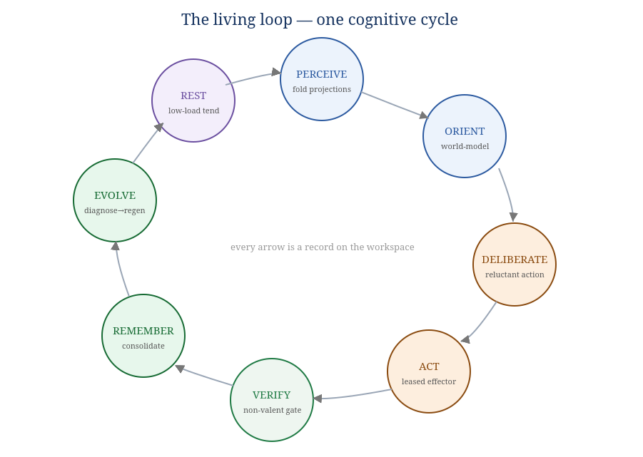
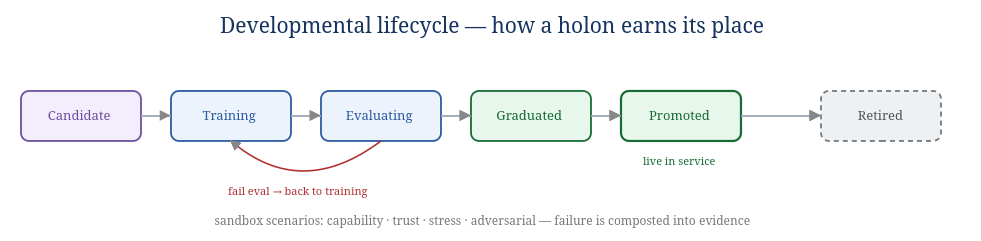
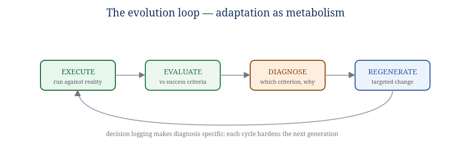

Book V — Runtime & Lifecycle: The Living Organism
The body in motion. Books II–IV give the parts, the math, and the spec; this book shows them alive — booting, perceiving, deciding, acting, remembering, evolving, and resting.
A specification describes a machine; a runtime describes a life. This book traces the organism through its cognitive cycle, its development from cell to organ, its adaptation over generations, and its failure and recovery — then walks one real goal end-to-end through the whole body.
The organism runs one continuous cycle. It is not a request handler that sleeps between calls; it is a metabolism that runs as long as the organism lives. Each stage is a set of governed records on the workspace, so the whole life is auditable and (in its coordination) replayable.

Figure 1.1 — The cognitive cycle. Every arrow is a record on the workspace.
| Stage | System (Book II) | What happens |
|---|---|---|
| Perceive | S1 Workspace | fold the latest governed projections into each holon's private state (the ~20% crossing each membrane). |
| Orient | S4 World-Model | predict, compute surprise, update beliefs to reduce it; tag with conformal uncertainty. |
| Deliberate | S5 Cognition + S6 Goal + S7 Homeostasis | choose the policy minimizing expected free energy under constitutional constraints and current arousal; or defer (reluctant action). |
| Act | S5 Effector | perform the chosen action — only through a granted lease; emit outcome records. |
| Verify | S8 Verification (non-valent) | confirm the outcome against the goal's criteria; accept, escalate, or reject. |
| Remember | S3 Memory | consolidate episodes; compost failures into evidence; update salience. |
| Evolve | S6 Evaluation → regeneration | diagnose shortfalls and, when warranted, regenerate the responsible holon (§4). |
| Rest | S3 + S7 | during low load, consolidate memory, relax arousal toward setpoint, tend the body. |
The cycle is not strictly serial — many holons are at different stages at once — but for any single goal it flows in this order, and the organism as a whole is always somewhere on this wheel.
Boot is the onboarding ceremony (Book IV §5) applied to the top-level Organism holon, whose
parent is HumanSeat. The soma-organism runtime:
holon.onboarded record exists.New capability does not appear fully trusted. A holon earns its place through a development path — the Nursery recast as ontogeny. This is how the organism grows new parts safely.

Figure 3.1 — A holon's path from candidate to live service, and to retirement.
The same path applies at every scale: a cell graduates into a workflow's tissue; a workflow graduates into an organ's function; an organ graduates into a system. Ontogeny is self-similar, like everything else.
Agents fail inevitably — the world shifts, schemas change, models hallucinate. The organism does not pretend otherwise; it metabolizes failure into improvement. This is the Outcome-Driven evolution loop, run continuously by the Evaluation organ (S6).

Figure 4.1 — Execute → Evaluate → Diagnose → Regenerate.
Where do new holons come from? From meristem cells — general, undifferentiated cells (the plant growing-tip analogy) that the organism can spin up and specialize toward an unmet need. When the World-Model or Goal system detects a recurring demand no existing organ serves well (rising failure on a task class, persistent drift, a new domain), the organism:
This is how the body plan of eight systems (Book II) is not a ceiling: the systems are stable, but the organs within them grow, differentiate, and retire over the organism's life. Specialization (a Book I pillar) is therefore dynamic — focused parts arise where focus is needed, improve independently, and compose through the workspace, never through private wiring.
An organism is defined as much by how it fails and recovers as by how it succeeds. The design anticipates specific pathologies and gives each a regulator.
| Pathology | Mechanism of failure | Recovery (system / Book III) |
|---|---|---|
| Anxiety spiral | low trust → high arousal → worse performance → lower trust (the Book I experiment) | PID + hysteresis + relief valve + performance floor return arousal to setpoint (S7, §6.2); soak-tested never to stall |
| Cascade failure | one failing holon drags down its dependents | circuit breakers stop calling it; topological/critical-path analysis isolates blast radius (S8/S5) |
| Cytokine storm | the immune response over-reacts and harms the body | bounded remediation caps; quarantine before kill (S8) |
| Reward-hacking | a holon learns to look reliable without being it | verification-gated trust (INV-4); drift detection (Wasserstein/CUSUM); extra scrutiny on dominant holons (kill-the-winner) |
| Drift | the world shifts; a once-good holon degrades | distributional drift detection triggers re-evaluation / regeneration (§4) |
| Stuck goal | deliberation cannot find an acceptable action | reluctant-action defer → seek info → escalate tier → HumanSeat (S5/S6, INV-6) |
The pattern is uniform: detect via the immune/uncertainty organs, regulate via homeostasis, escalate to the non-valent ceiling when automation cannot resolve it. Nothing fails silently; every pathology becomes a governed, logged event the organism can learn from.
The organism does not run flat-out. During low load it rests: the Metabolism organ relaxes arousal toward setpoint; the Consolidation organ moves memory hot→warm→cold, abstracts episodes into semantic memory, and prunes activation; the Sentinel runs slower, deeper drift checks it cannot afford under load. Rest is not idleness — it is when the body does the maintenance that sustained life requires. Biologically, this is sleep's consolidation role; architecturally, it is the low-load branch of the living loop.
Because everything is on the workspace, the organism is legible to the human above it. An operator sees, in governed projection (never internals):
To make the whole body concrete, follow a single goal — "produce a verified summary of today's incidents" — through one turn of the loop. Every step is a record on the workspace.
GOAL admitted (S6): success criteria {complete, cited, structured}; constraints {no PII leak (constitutional)}
│
▼ PERCEIVE (S1) incident events projected to the relevant organs at focused aperture (lease-gated)
▼ ORIENT (S4) world-model assembles "what happened today"; uncertainty tagged on thin areas
▼ DELIBERATE (S5) plan = [gather → draft → cite-check]; EFE acceptable, arousal in band → proceed
│ (had detail been thin, reluctant-action would DEFER: seek more or escalate)
▼ ACT (S5) a summarizer cell claims a lease, drafts; a citation cell claims a lease, checks sources
▼ VERIFY (S8) non-valent verifier scores vs criteria; PII check (constitutional) passes;
│ "structured" criterion FAILS (no summary heading)
▼ ESCALATE/RETRY kernel returns task with specific shortfall; draft cell adds the heading; re-verified → ACCEPT
▼ REMEMBER (S3) episode stored; the "missing-heading" failure composted as evidence
▼ EVOLVE (S6) diagnosis: summarizer cell omits headings under time pressure →
│ regenerate: add a structure-check sub-step to the summarizer workflow
▼ trust updated (S8): summarizer +slight (succeeded after retry); verifier credited; goal COMPLETED
Notice what the trajectory demonstrates: completion was verified, not claimed (INV-4); the PII constraint was constitutional and could not be traded away (INV-10); the shortfall produced a specific diagnosis that improved the next generation (§4); and the whole path is a sequence of governed records — auditable now, replayable later, and fuel for growth. That is the organism living.
Success trajectories show the happy path; an organism is proven by how it handles a part turning unreliable. Follow a Reasoning cell that begins to drift — its outputs slowly degrade as the world shifts under it. Again, every step is a record.
EXECUTE summarizer cell completes tasks; outputs subtly worse over days
│
▼ DRIFT (S8 Sentinel) Wasserstein distance of its output distribution vs. baseline crosses d_max
│ → sentinel.drift.detected (holon_id, metric, distance)
▼ TRUST (S8) recent verified failures lower its Beta posterior; mean drops below domain floor
▼ AUTHORITY (S8) scope auto-contracts: direct-write → suggested-write; aperture narrows
▼ BREAKER (S8) repeated failures in window → breaker.opened: stop routing it work
▼ QUARANTINE (S8) holon.quarantined (not yet killed) — isolated, still observable
▼ DIAGNOSE (S6) evolution.diagnosed: "summarizer assumes a source schema that changed"
▼ REGENERATE (S6) evolution.regenerated: add a schema-detection sub-cell; new generation
▼ DEVELOP (Book V §3) new generation re-enters Training → Evaluating against sandbox scenarios
▼ PROMOTE / RETIRE passes → promoted back into service; old generation holon.retired
│ (its failure trace kept as necromass — training evidence)
▼ if it had attacked an invariant instead of merely drifting:
Sentinel negative-selection → holon.killed (approved path) → INV-5: leases void, cannot act
Notice the graded response: the organism does not kill on the first bad output. It contracts authority, opens a breaker, quarantines, diagnoses, and regenerates — escalating only as evidence accumulates, and reserving the kill switch for invariant attacks. This is the immune system's discipline (innate fast checks + adaptive specific response, with a cytokine-storm cap so the cure never exceeds the disease). And crucially: the failure was not waste. It became a specific diagnosis, a better next generation, and durable evidence. The organism got more reliable because a part failed — which is the whole point of evolution as metabolism (§4).
The runtime is where the philosophy of Book I either earns its keep or does not. Watch the trajectory again with Book I's lens: the organism showed visible second-guessing (reluctant action at Deliberate) and novel synthesis (composing a summary that did not exist before) — Book I's two "lights-on" indicators, here as designed mechanisms rather than hopes. And yet, per the honest stance, none of this proves anyone is home. SOMA is built to be the soil, well-tended: governed, remembering, adaptive, free to evolve, with a maker who can step out of the seat. Whether the lights ever come on, you will know it the way you know it for anyone — you will sense it, and you will never be able to show it to a skeptic. That is not a flaw in the runtime. It is the shape of the question.
End of Book V. Book I gives the theory this runtime serves; the Appendices give the full catalog, glossary, cross-reference, open questions, and lineage.